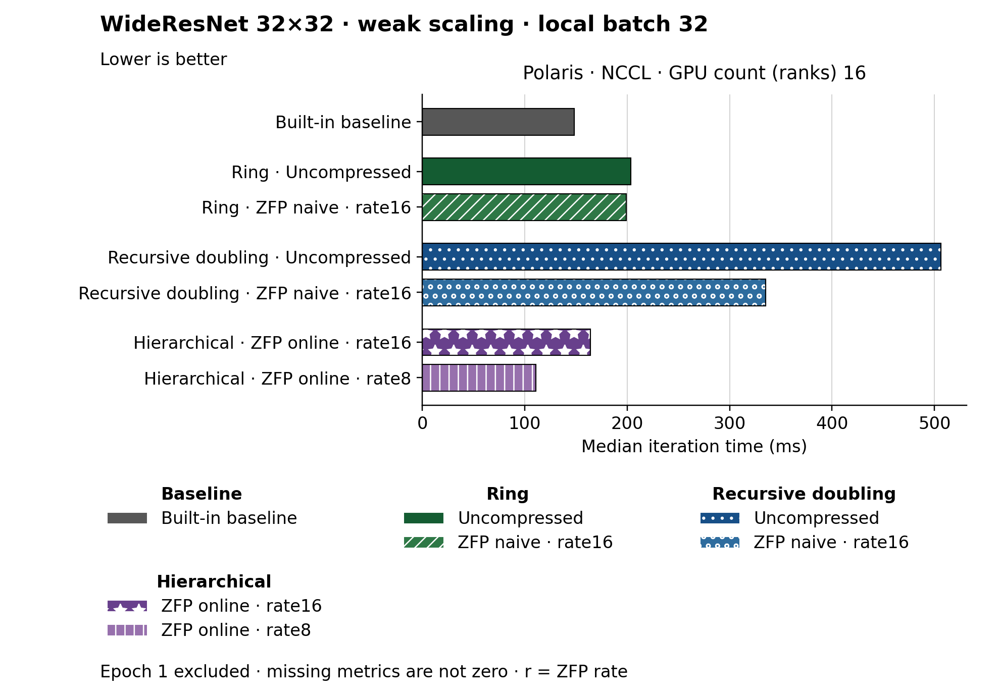

The figure uses hbar. Families and methods are identified by text and patterns in addition to color. The metric is Median iteration time (ms). Polaris · NCCL, GPU count (ranks) 16: Hierarchical · ZFP online · rate8 has the lowest plotted value, 110.670. Epoch 1 is excluded. Values are medians; when repeated runs are available the selected repeat policy is median. These are not confidence intervals across repeated jobs. Missing or unrecorded metrics are omitted, not set to zero.
| Panel | GPU count (ranks) | Method | Value | Runs |
|---|---|---|---|---|
| Polaris · NCCL | 16 | none | 148.32 | 1 |
| Polaris · NCCL | 16 | ring | 203.82 | 1 |
| Polaris · NCCL | 16 | ring_zfp_naive:16 | 199.08 | 1 |
| Polaris · NCCL | 16 | hierarchical_zfp_online_coll:16 | 164.215 | 2 |
| Polaris · NCCL | 16 | hierarchical_zfp_online_coll:8 | 110.67 | 2 |
| Polaris · NCCL | 16 | recursive_doubling | 506.1 | 1 |
| Polaris · NCCL | 16 | recursive_doubling_zfp_naive:16 | 335.34 | 1 |